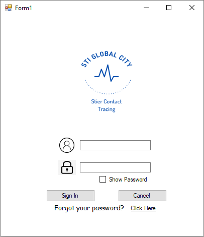
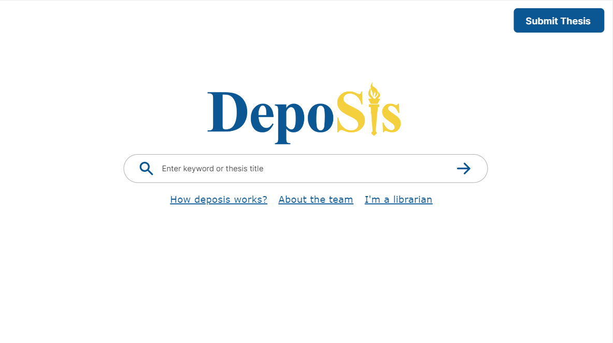
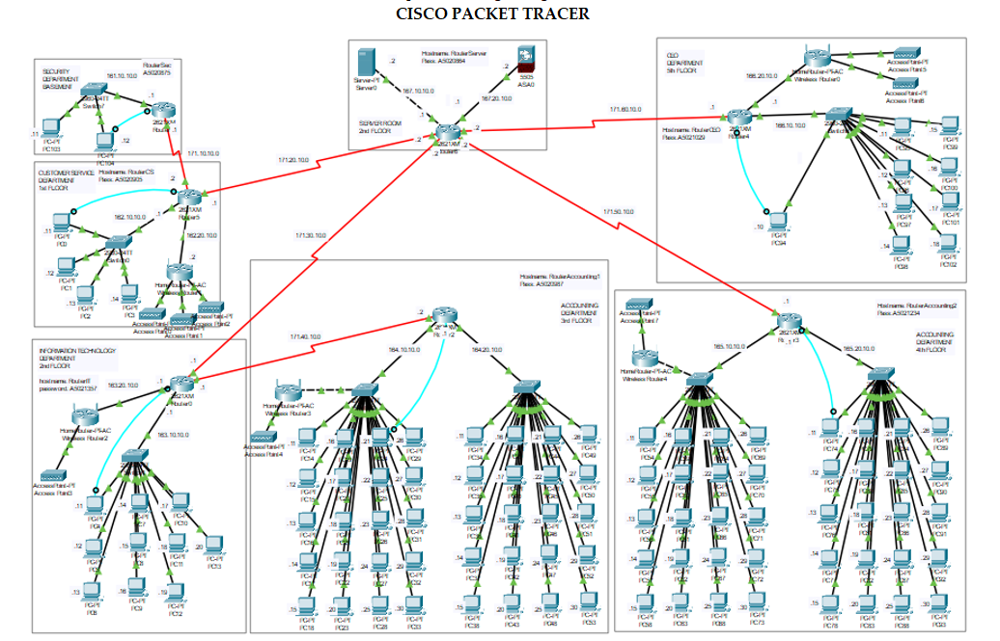
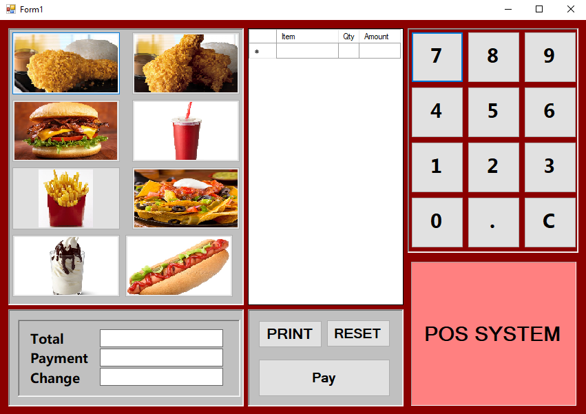
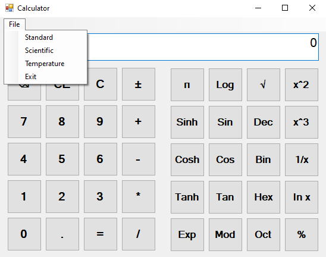

Contact Tracing
A project made in 3rd year first semester, it's a sample contact tracing with a built in database (microsoft access)

Thesis Repository
Capstone Project that is still in progress. My group plan on making a thesis repository for STI College Global City

Network System Proposal Project
A 3rd year group activity. This is a proposed network system for a chosen company.

Simple POS System
Here's a simple POS system that I made from C#. It has feature of printing the order of the customer.
